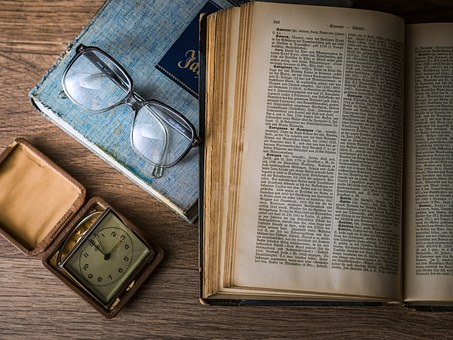

Notre histoire:
Guy Martial N.N. est né Infirme Moteur Cérébrale en 1990 au Cameroun, et ses parents ont dû faire assez rapidement le deuil de l’enfant idéal.
Il est né avec une paralysie cérébrale qui affecte sa motricité et son langage. À la naissance, il avait les mains fermées et contractées.
À 6 mois, il n’était pas encore capable de se tenir en position assise. À 1 an, il ne parlait pas, et il était loin de se tenir debout. Commence alors la longue marche vers les thérapeutes : kinésithérapeute, orthophoniste, psychologue, éducateur spécialisé etc.
À 4 ans, comme tous les enfants de son âge, ses parents l’inscrivent en maternelle : début de la stigmatisation, de la frustration et du rejet par son entourage. Un matin, lorsque son père voulait le déposer à l’école, il refusa de sortir de la voiture. Personne ne pu le décrocher de son siège.
Il n'etait pas heureux. Les enseignants n’étaient pas formés pour les enfants comme lui. Tout était fastidieux. Sa mère veillait à ce qu'il reprenne tout ce qu'ils avaient fait à l’école tous les jours à la maison.
Elle était son auxiliaire de vie scolaire. Sa motricité fine était pitoyable et le regards des autres sur lui le blessait énormément.
Ses parents ont dû transgresser les moeurs et coutumes de son pays, pour veiller sur son éducation. On l’a changé d’école plusieurs fois.
À cause de sa lenteur, ses problèmes de motricité et de langage, il fut inscrit dans un centre spécialisé. Là, il ne fit qu’une année, il demanda à sa mère de ne pas y retourner, car il voulait écrire, apprendre et faire comme les autres enfants autour de lui.
Ça le blessait d’être isolé et de constamment lui faire rappeler qu'il’était différent et que ce n’était pas à son avantage.
Sa mère le ramena alors à l’école «traditionnelle» après une évaluation psychopédagogique avec le directeur de l’école.
Et après trois années de pédagogie centrée sur lui à savoir la motivation donnée aux cours, la valorisation de toutes ses réussites quelles qu’elles soient et de la confiance en le présentant ses réussites futures à court et à long terme, il a obtenu en 2004 son premier diplôme (le Certificat Élémentaire Primaire). C’était l’euphorie!
La même semaine, il a fait une rencontre qui fût un moment marquant pour lui. il a croisé un ancien ami du centre spécialisé pour handicapé, et il lui partageait ce qu'il faisait dans ses études et il lui demandait ce que lui faisait maintenant. Son ami lui fit un signe de la main qu’il ne comprenait rien.
Il prit alors un morceau de cailloux au sol et écrivit son nom. Il demanda à son ami d’écrire le sien, et son ami n’était pas capable. La différence de leurs parcours était énorme.
À partir de ce moment là, c’était clair. Il voulait aider les autres enfants qui vivent avec un handicap comme lui, à ce qu’il puisse être inclus et valorisé à travers leur éducation, et que leur différence ne fasse pas en sorte de les mettre à l’écart. Guy Martial de retour à la maison, demanda à sa mère: "Que sont devenus mes amis que j'avais cotoyés lors de mon passage dans ce centre de rééducation? Ont-t-il eu leur diplôme?". Elle ne lui donna pas de réponse fixe.
Et il demanda à sa mère d'ouvrir une école pour ces enfants. Elle repondit qu'elle ne sait pas si elle va être capable.
Malgré ses formations reçues dans les differents seminaires qu'elle participait déjà, motivée par les livres déjà lus, madame NZALI est repartie à l'école et a suivi une formation en psychomotricité.
Finalement en décembre 2005, elle exauça le voeux de son fils, c'est à dire, ouvrir une école donc la mission première est de remédier à l’erreur des centres de rééducation camerounais et dans certains pays du monde qui oublient souvent le côté intellectuel qui doit être illuminé de sciences ou encore connaissances contribuant ainsi à l’indépendance totale de la personne.